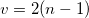
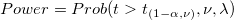
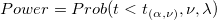
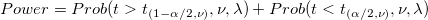
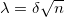
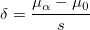

Für zwei Stichproben von gleicher Größe (n) werden die Trennschärfe mit einem Freiheitsgrad von

und die gepoolte Standardabweichung/math-03c7c0ace395d80182db07ae2c30f034.png "s") berechnet mit:
berechnet mit:



Der Nichtzentralitätsparameter:

and
